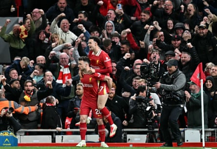

I nitially it was hard to make out the words. Then when I knew the words I found it hard to sing them. Mainly because there seemed to be too many, leading to lines being tripped over and bafflement with the sound of everyone around me sticking with it. But they were, so I did too, and eventually I got it, and loved it, and, as such, I sang it, over and over again.
“Oh, he wears the No 20 / He will take us to victory / And when he’s running down the left wing / He’ll cut inside and score for LFC / He’s a lad from Portugal / Better than Figo don’t you know / Oh, his name is Diogo!”
Liverpool supporters love a song and few in recent years have been belted out with as much joyful lustiness as the one dedicated to Diogo Jota . Based on Bad Moon Rising by Creedence Clearwater Revival, it took some Reds longer than others to grasp but we eventually all did and so it roared from the stands of Anfield and elsewhere. A brilliant celebration of a brilliant player and one we expected to continue chanting for a few more seasons at least. And no doubt we will, but its words will now be tinged with sadness. Grief, even.
These things are simply not meant to happen and, more than anything, Jota’s death is a personal tragedy. He was 28, recently married, a father of three and lost his life alongside his brother. One can only imagine the immense heartbreak being felt by his family and friends. And you only have to glance across mainstream and social media to see his passing has had a wider impact, few places more than at the club he called home for the past five years. Not for the first time, Liverpool Football Club are in mourning.
Staff and players have paid their own tributes to Jota, as have fans, seen most vividly with the array of flowers, shirts, scarves and messages of condolences left outside Anfield after news from Spain emerged on Thursday morning. The collective sense of shock and devastation is palpable, as well as heartfelt, because Jota was adored by those who watched him play after his arrival from Wolves for £45m in September 2020. And yes, we knew he wasn’t better than Figo, but we could also see that he was good. Seriously, seriously good.
Quite simply, Jota was a supreme goalscorer. There were 65 in 182 appearances and when he got a chance he more often than not took it, something you inherently felt watching him and which is backed up by data. As the statistics-based football writer Andrew Beasley posted on Bluesky, 39 players have had 50-plus shots on target for Liverpool in the Premier League, with Jota’s 47% conversion rate the highest of them all. More than Mohamed Salah, more than Michael Owen, more than Fernando Torres. And what made Jota’s potency especially noteworthy was that he was neither particularly big nor fast. Instead he found his way to goal via a combination of quick thinking, bravery and determination, traits that came together to produce his trademark move: the drop of the shoulder, the surge through defenders, the shift of weight and, finally, the ice-cold shot.
Diogo Jota takes in the acclaim of teammate Curtis Jones and a jubilant home crowd after scoring the crucial goal in a 1-0 victory over Everton at Anfield in April.Photograph: Paul Ellis/AFP/Getty Images
To some extent Jota’s biggest strengths were also his biggest weakness, in that his willingness to take physical contact from opponents in order to score or set up a teammate to do so – he also provided 22 assists at Liverpool – led to collisions that on more than one occasion sidelined him for an extended spell. And injuries were sadly a notable aspect of Jota’s time at Liverpool. He missed more than 150 games through various bone breaks and muscle tears, and the absences became so frequent and lengthy that Liverpool fans increasingly felt he could be sold this summer or become a back-up option.
Whatever the future might have held, Jota would always have been cherished by Kopites. It took us a year to watch him in the flesh given his arrival coincided with the Covid-hit behind-closed‑doors season but from a distance a bond was quickly established, not only because of his goals and commitment but also because of a hugely likable nature. And soon he could be enjoyed up close, with his song taking off during the 2021-22 season, his most prolific at the club, with 21 goals scored in 55 appearances (with many indeed coming from the left wing), a contribution that was key to Liverpool winning two domestic trophies and coming agonisingly close to an unprecedented quadruple.
And the goals continued, many of them memorable, including winners in a 4-3 victory over Tottenham in April 2023 and a 1-0 triumph over Everton in April of this year that moved Liverpool a step closer to winning a 20th league title. Indeed, Jota’s last act as a Liverpool player was lifting the Premier League trophy at a joyous Anfield after the 1-1 draw with Crystal Palace on the final day of last season . The next time players and fans convene there the mood will be strikingly different. But the Jota song will again be sung and he will again be celebrated. It’s the least we can do for a player, a person, who gave us so much.